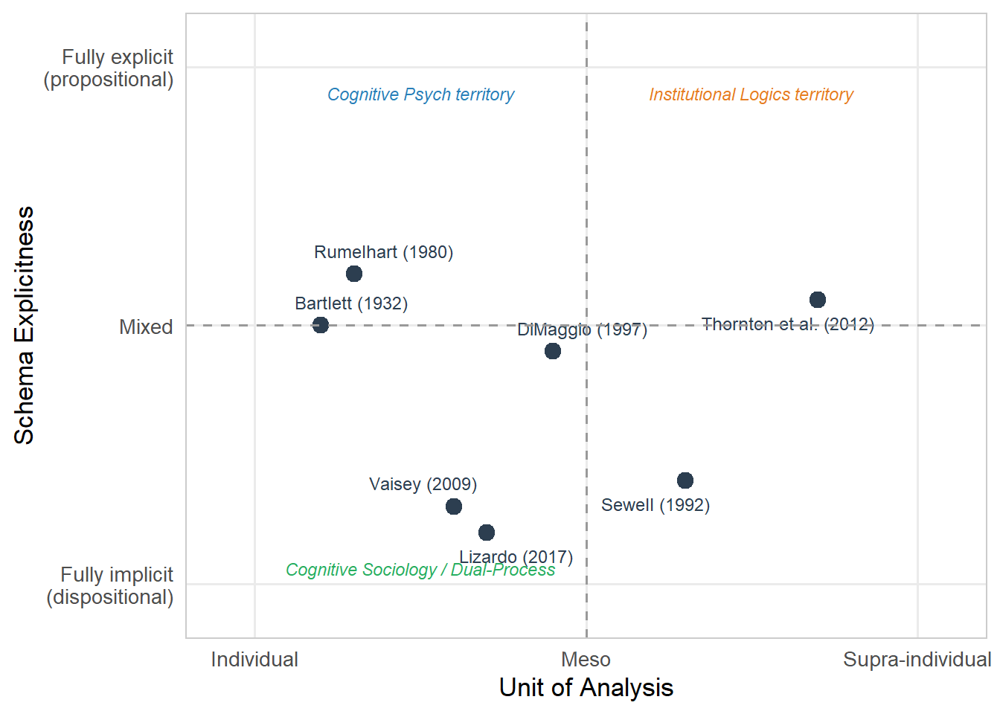

Week 1 Foundations: What Are Cultural and Cognitive Sociology?
Weeks 1–2 | Theory + Lab 1
1.1 The Central Epistemological Problem
Cultural sociology and cognitive sociology share a core puzzle: how do meanings, categories, and interpretive frameworks become socially patterned — and how do they, in turn, shape social action?
This is not a simple question. It sits at the intersection of three unresolved tensions:
- Idealism vs. materialism: Does culture operate as an autonomous causal force, or is it derivative of material/structural conditions?
- Voluntarism vs. determinism: Are actors creative deployers of cultural resources, or are they shaped by deep, pre-reflective schemas?
- Individual vs. supra-individual: Is cultural cognition a property of individual minds, or of social collectivities?
Your position on these tensions determines which theoretical tradition you draw from, which methods are appropriate, and what counts as an explanation.
1.2 1.1 The Strong Program in Cultural Sociology
Alexander and Smith’s (2003) “strong program” makes a specific epistemological claim: culture must be treated as an independent variable with its own logic, irreducible to social structure or material interest.
The strong program operates by:
- Textual analysis of cultural objects: treating social events, institutions, and practices as texts to be decoded
- Identifying binary codes: sacred/profane, pure/impure, rational/irrational — the elementary forms of cultural classification
- Explaining social outcomes via the autonomous logic of cultural codes
The empirical flagship is Alexander’s civil sphere analysis: democratic discourse operates through a binary moral code (pure civic vs. impure anti-civic qualities). Political actors succeed or fail partly as a function of their ability to claim civic purity and assign civic pollution to opponents.
The autonomy claim vs. the weak program. The “weak program” (most Marxist and Weberian approaches) treats culture as a dependent variable — culture reflects and reproduces material interests or structural positions. The strong program reverses this: the civil sphere in Alexander’s account is not reducible to class interests; it has its own grammar. This is an empirical claim, not just a theoretical posture. It is also disputed — see Wuthnow (1987) and Eyerman (2013) for critiques.
1.3 1.2 Culture as Toolkit: Swidler (1986)
Swidler’s intervention is one of the most cited in cultural sociology for a reason: it reframes the causal role of culture without abandoning it.
The key move: culture does not operate by instilling values that then drive behavior. Instead, culture provides a toolkit (or “repertoire”) of strategies of action — habits, skills, styles — from which actors construct lines of action.
This makes values an inadequate unit of analysis. Two people can share a value (e.g., “achievement”) but deploy entirely different cultural strategies to pursue it.
The crucial distinction:
- Settled periods: established strategies of action require little explicit cultural work; culture is carried implicitly in practice
- Unsettled periods: explicit ideologies proliferate as actors construct new strategies of action; culture becomes consciously mobilized and contested
Operationalization problem. Swidler’s toolkit model is theoretically productive but methodologically difficult. How do you measure a “strategy of action”? It is not a discrete attitude item. This has led to a split: some researchers operationalize it through ethnographic work (observing strategies as deployed in practice); others attempt to infer repertoires from behavioral data. Neither fully satisfies the theoretical specification.
1.4 1.3 The Cognitive Turn: DiMaggio (1997)
DiMaggio’s Annual Review paper is the entry point for cognitive sociology in the mainstream sociological tradition. The argument: cognitive science offers sociology a more realistic model of how actors process information — one that should replace the thin, hyper-rational actor assumed in most structural accounts.
Key cognitive concepts introduced:
- Schemas: knowledge structures that organize perception and interpretation. Not just “stereotypes” — schemas operate across all domains of social cognition.
- Automatic vs. deliberate processing: much social cognition is automatic, associative, and schema-driven; deliberate reasoning is effortful and occurs mainly when automatic processing fails
- Categorization: the cognitive act of assigning instances to categories is both culturally variable and consequential for social outcomes (e.g., who counts as “skilled,” “dangerous,” “deserving”)
1.5 1.4 Dual-Process Theory and Its Sociological Implications
Vaisey (2009) brings dual-process theory directly into cultural sociology’s empirical core. The framework:
| System | Properties | Sociological Translation |
|---|---|---|
| System 1 | Fast, automatic, associative, pre-reflective | Habitus, schemas, dispositional culture |
| System 2 | Slow, deliberate, linguistic, effortful | Justifications, stated values, ideological discourse |
The empirical implication is radical: if behavior is primarily driven by System 1 (schemas, dispositions), then surveys that ask respondents to state their values or reasons are measuring System 2 post-hoc rationalizations — not the actual drivers of action.
This is why Vaisey uses LCA on attitude batteries as a proxy for dispositional structure, and then treats discursive justifications as dependent variables. If schemas are dispositional, they should predict behavior better than stated reasons.
Lizardo’s implicit/explicit distinction (2017) refines this further. “Implicit culture” (embodied, automatic, non-propositional) differs from “explicit culture” (discursive, propositional, symbolically encoded). The two are not just different in speed — they have different cognitive substrates and require different measurement approaches. Implicit culture is accessed through observation of practice; explicit culture is accessible via verbal report.
1.6 1.5 Zerubavel and Cognitive Sociology
Zerubavel’s project is distinct from the dual-process tradition. Social Mindscapes (1997) asks: what aspects of cognition are social in origin and variable in structure?
The key claims:
- Optical socialization: we learn what to notice and what to ignore from our social environment. Attention is not natural; it is socially patterned.
- Mental topology: our cognitive maps carve up the social world into discrete categories with rigid boundaries (“lumping and splitting”). These boundaries are socially maintained, not cognitively natural.
- Social memory: what a community remembers is a social fact, not just an aggregate of individual memories. Commemorative practices produce collective memory.
Zerubavel does not typically use quantitative methods himself — his approach is more phenomenological and comparative-historical. But his concepts (classification, mental topology, relevance structures) are operationalizable, and several quantitative researchers have done so (see Chapter 3).
1.7 Lab 1: Concept Mapping as Methodological Practice
This exercise trains a specific skill: tracing a construct from its theoretical origins through its various operationalizations, and identifying where definitional slippage occurs across disciplinary traditions. This matters because “schema,” “frame,” “script,” and “disposition” are used interchangeably in some literatures and technically distinguished in others. Confusion at the conceptual level produces confusion at the measurement level.
1.7.1 The Target Construct: “Schema”
We trace the construct of schema across three traditions.
## ── Attaching core tidyverse packages ──────────────────────── tidyverse 2.0.0 ──
## ✔ dplyr 1.2.0 ✔ readr 2.2.0
## ✔ forcats 1.0.1 ✔ stringr 1.6.0
## ✔ ggplot2 4.0.2 ✔ tibble 3.3.1
## ✔ lubridate 1.9.5 ✔ tidyr 1.3.2
## ✔ purrr 1.2.1
## ── Conflicts ────────────────────────────────────────── tidyverse_conflicts() ──
## ✖ dplyr::filter() masks stats::filter()
## ✖ dplyr::lag() masks stats::lag()
## ℹ Use the conflicted package (<http://conflicted.r-lib.org/>) to force all conflicts to become errors##
## Attaching package: 'kableExtra'
##
## The following object is masked from 'package:dplyr':
##
## group_rows# Build a concept map as a structured dataframe
schema_map <- tribble(
~tradition, ~key_author, ~definition, ~unit_of_analysis, ~measurement_approach,
"Cognitive Psych", "Bartlett (1932)", "Organized mental structure enabling reconstruction of experience", "Individual", "Recall experiments, reaction time",
"Cognitive Psych", "Rumelhart (1980)", "Data structure for generic concepts; slots and fillers", "Individual", "Protocol analysis, priming",
"Sociology", "Sewell (1992)", "Virtual schemas: transposable procedures enabling practice", "Trans-individual", "Theoretical; ethnographic inference",
"Sociology", "DiMaggio (1997)", "Implicit knowledge structures organizing social perception", "Individual + social", "Surveys (indirect), experiments",
"Soc-Cog (Vaisey)","Vaisey (2009)", "Dispositional moral orientations; System 1 structures", "Individual (latent)", "LCA on attitude batteries",
"Org. Theory", "Thornton et al. (2012)", "Institutional logics as supra-individual cognitive schemas", "Field/sector", "Content analysis, categorical measures",
"Cultural Soc.", "Lizardo (2017)", "Implicit culture: embodied, non-propositional schemas", "Individual (embodied)", "Behavioral observation, implicit tests"
)
schema_map %>%
kable(
col.names = c("Tradition", "Key Author", "Definition", "Unit of Analysis", "Measurement"),
caption = "Table 1.1: The concept of 'schema' across disciplinary traditions"
) %>%
kable_styling(
bootstrap_options = c("striped", "hover", "condensed"),
full_width = TRUE,
font_size = 13
) %>%
column_spec(3, width = "25em") %>%
column_spec(5, width = "15em")| Tradition | Key Author | Definition | Unit of Analysis | Measurement |
|---|---|---|---|---|
| Cognitive Psych | Bartlett (1932) | Organized mental structure enabling reconstruction of experience | Individual | Recall experiments, reaction time |
| Cognitive Psych | Rumelhart (1980) | Data structure for generic concepts; slots and fillers | Individual | Protocol analysis, priming |
| Sociology | Sewell (1992) | Virtual schemas: transposable procedures enabling practice | Trans-individual | Theoretical; ethnographic inference |
| Sociology | DiMaggio (1997) | Implicit knowledge structures organizing social perception | Individual + social | Surveys (indirect), experiments |
| Soc-Cog (Vaisey) | Vaisey (2009) | Dispositional moral orientations; System 1 structures | Individual (latent) | LCA on attitude batteries |
| Org. Theory | Thornton et al. (2012) | Institutional logics as supra-individual cognitive schemas | Field/sector | Content analysis, categorical measures |
| Cultural Soc. | Lizardo (2017) | Implicit culture: embodied, non-propositional schemas | Individual (embodied) | Behavioral observation, implicit tests |
1.7.2 Identifying Definitional Slippage
# Where do the definitions diverge most?
# Key dimensions of variation across traditions:
slippage_dims <- tribble(
~dimension, ~cognitive_psych, ~sewell_soc, ~vaisey_soc, ~institutional_logics,
"Locus", "Individual mind", "Trans-individual", "Individual (latent)", "Field/sector",
"Propositional?", "Sometimes yes", "No (procedural)", "No (dispositional)", "Partially (symbolic)",
"Conscious?", "Varies", "No", "No", "Partly",
"Stable/Dynamic?", "Context-sensitive", "Durable, transposable", "Durable", "Historically variable",
"How measured?", "Experimental", "Ethnographic inference","LCA (survey proxy)", "Content analysis",
"Micro/Macro?", "Micro", "Meso (linking)", "Micro", "Macro-meso"
)
slippage_dims %>%
kable(
col.names = c("Dimension", "Cognitive Psych", "Sewell (1992)",
"Vaisey (2009)", "Institutional Logics"),
caption = "Table 1.2: Where the schema concept diverges across traditions"
) %>%
kable_styling(bootstrap_options = c("striped", "hover"), font_size = 13) %>%
column_spec(1, bold = TRUE)| Dimension | Cognitive Psych | Sewell (1992) | Vaisey (2009) | Institutional Logics |
|---|---|---|---|---|
| Locus | Individual mind | Trans-individual | Individual (latent) | Field/sector |
| Propositional? | Sometimes yes | No (procedural) | No (dispositional) | Partially (symbolic) |
| Conscious? | Varies | No | No | Partly |
| Stable/Dynamic? | Context-sensitive | Durable, transposable | Durable | Historically variable |
| How measured? | Experimental | Ethnographic inference | LCA (survey proxy) | Content analysis |
| Micro/Macro? | Micro | Meso (linking) | Micro | Macro-meso |
1.7.3 Visualization: Mapping Conceptual Space
library(ggrepel)
# Position each tradition on two key theoretical axes:
# X: Unit of analysis (individual vs. supra-individual)
# Y: Explicitness of the schema (implicit/dispositional vs. explicit/propositional)
positions <- tribble(
~label, ~x, ~y,
"Bartlett (1932)", 0.1, 0.5,
"Rumelhart (1980)", 0.15, 0.6,
"Sewell (1992)", 0.65, 0.2,
"DiMaggio (1997)", 0.45, 0.45,
"Vaisey (2009)", 0.3, 0.15,
"Lizardo (2017)", 0.35, 0.1,
"Thornton et al. (2012)", 0.85, 0.55
)
ggplot(positions, aes(x = x, y = y, label = label)) +
geom_point(size = 3.5, color = "#2c3e50") +
geom_text_repel(
size = 3.2,
box.padding = 0.5,
point.padding = 0.3,
color = "#2c3e50"
) +
scale_x_continuous(
name = "Unit of Analysis",
breaks = c(0, 0.5, 1),
labels = c("Individual", "Meso", "Supra-individual"),
limits = c(-0.05, 1.05)
) +
scale_y_continuous(
name = "Schema Explicitness",
breaks = c(0, 0.5, 1),
labels = c("Fully implicit\n(dispositional)", "Mixed", "Fully explicit\n(propositional)"),
limits = c(-0.05, 1.05)
) +
geom_hline(yintercept = 0.5, linetype = "dashed", color = "grey60") +
geom_vline(xintercept = 0.5, linetype = "dashed", color = "grey60") +
annotate("text", x = 0.25, y = 0.95, label = "Cognitive Psych territory",
color = "#2980b9", size = 3, fontface = "italic") +
annotate("text", x = 0.75, y = 0.95, label = "Institutional Logics territory",
color = "#e67e22", size = 3, fontface = "italic") +
annotate("text", x = 0.25, y = 0.03, label = "Cognitive Sociology / Dual-Process",
color = "#27ae60", size = 3, fontface = "italic") +
theme_minimal(base_size = 13) +
theme(
panel.grid.minor = element_blank(),
panel.border = element_rect(fill = NA, color = "grey80")
)
Figure 1.1: Figure 1.1: Positioning schema traditions on two key dimensions. Placement is approximate and based on theoretical reading of the primary sources.
Assignment 1 — Conceptual Map (Due Week 3)
Select one of the following constructs:
- Habitus
- Frame
- Cultural capital
- Moral order
- Institutional logic
Using at least five empirical studies (minimum 3 must be quantitative), produce a concept map equivalent to Tables 1.1 and 1.2 above for your chosen construct. Identify:
- Definitional variants across studies
- Unit of analysis at which the construct is measured
- Operationalization decisions and their justification
- Where operationalization may not capture the theoretical construct
Length: 2,500–3,500 words + tables.
Format: R Markdown document, rendered to PDF or HTML.
Core Readings
- Alexander, J. C., & Smith, P. (2003). The Strong Program in Cultural Theory. In J. C. Alexander, The Meanings of Social Life. Oxford University Press.
- Swidler, A. (1986). Culture in Action: Symbols and Strategies. American Sociological Review, 51(2), 273–286.
- Zerubavel, E. (1997). Social Mindscapes: An Invitation to Cognitive Sociology. Harvard University Press. Chapters 1–3.
- DiMaggio, P. (1997). Culture and Cognition. Annual Review of Sociology, 23, 263–287.
- Vaisey, S. (2009). Motivation and Justification: A Dual-Process Model of Culture in Action. American Journal of Sociology, 114(6), 1675–1715.
- Lizardo, O. (2017). Improving Cultural Analysis: Considering Personal Culture in its Declarative and Nondeclarative Modes. American Sociological Review, 82(1), 88–115.
- Lizardo, O., & Strand, M. (2010). Skills, Toolkits, Contexts and Institutions: Clarifying the Relationship Between Different Approaches to Cognition in Cultural Sociology. Poetics, 38(2), 205–228.
## R version 4.5.3 (2026-03-11 ucrt)
## Platform: x86_64-w64-mingw32/x64
## Running under: Windows 11 x64 (build 26200)
##
## Matrix products: default
## LAPACK version 3.12.1
##
## locale:
## [1] LC_COLLATE=English_Israel.utf8 LC_CTYPE=English_Israel.utf8
## [3] LC_MONETARY=English_Israel.utf8 LC_NUMERIC=C
## [5] LC_TIME=English_Israel.utf8
##
## time zone: Asia/Jerusalem
## tzcode source: internal
##
## attached base packages:
## [1] stats graphics grDevices utils datasets methods base
##
## other attached packages:
## [1] ggrepel_0.9.8 kableExtra_1.4.0 lubridate_1.9.5 forcats_1.0.1
## [5] stringr_1.6.0 dplyr_1.2.0 purrr_1.2.1 readr_2.2.0
## [9] tidyr_1.3.2 tibble_3.3.1 ggplot2_4.0.2 tidyverse_2.0.0
## [13] rmarkdown_2.31
##
## loaded via a namespace (and not attached):
## [1] sass_0.4.10 generics_0.1.4 xml2_1.5.2 stringi_1.8.7
## [5] hms_1.1.4 digest_0.6.39 magrittr_2.0.4 timechange_0.4.0
## [9] evaluate_1.0.5 grid_4.5.3 RColorBrewer_1.1-3 bookdown_0.46
## [13] fastmap_1.2.0 jsonlite_2.0.0 promises_1.5.0 viridisLite_0.4.3
## [17] scales_1.4.0 textshaping_1.0.5 jquerylib_0.1.4 cli_3.6.5
## [21] shiny_1.13.0 rlang_1.1.7 base64enc_0.1-6 withr_3.0.2
## [25] cachem_1.1.0 yaml_2.3.12 otel_0.2.0 tools_4.5.3
## [29] tzdb_0.5.0 httpuv_1.6.17 vctrs_0.7.2 R6_2.6.1
## [33] mime_0.13 lifecycle_1.0.5 ClaudeR_0.2.0 miniUI_0.1.2
## [37] pkgconfig_2.0.3 pillar_1.11.1 bslib_0.10.0 later_1.4.8
## [41] gtable_0.3.6 glue_1.8.0 Rcpp_1.1.1 systemfonts_1.3.2
## [45] xfun_0.57 tidyselect_1.2.1 rstudioapi_0.18.0 knitr_1.51
## [49] farver_2.1.2 xtable_1.8-8 htmltools_0.5.9 svglite_2.2.2
## [53] compiler_4.5.3 S7_0.2.1